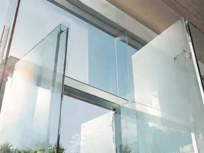

Webサイトづくりガイド
決める前に、
知っておくこと。
初めてのWebサイト制作で迷いやすいことを、制作会社へ相談する前にも読める形で整理します。専門用語ではなく、何を決め、何を用意し、何を期待しすぎない方がよいかを説明します。
-
 01
初めてのWebサイトで、最初に決める7つのこと
デザインや色を決める前に確認したい7項目を、決め方の例つきで説明します。制作会社へ相談する前に読んでも使えます。
01
初めてのWebサイトで、最初に決める7つのこと
デザインや色を決める前に確認したい7項目を、決め方の例つきで説明します。制作会社へ相談する前に読んでも使えます。
-
 02
SNSとWebサイトは、どう使い分ければよいですか？
SNS、地図サービス、Webサイトはそれぞれ得意なことが違います。どれを主軸にするかではなく、役割分担の決め方を説明します。
02
SNSとWebサイトは、どう使い分ければよいですか？
SNS、地図サービス、Webサイトはそれぞれ得意なことが違います。どれを主軸にするかではなく、役割分担の決め方を説明します。
-

03 小規模サイトの基本SEOで、最初に整えること 順位を上げる裏技ではなく、検索エンジンと読み手の両方に内容を伝えるための基礎を説明します。小規模サイトが優先して確認したい順に並べています。
記事は順次追加します。架空の執筆者や、実際には行っていない調査の結果は掲載しません。